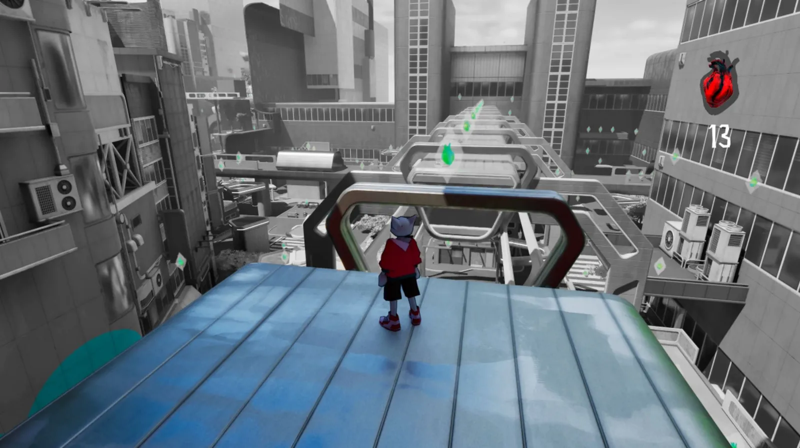
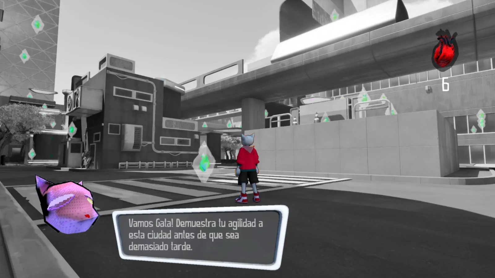
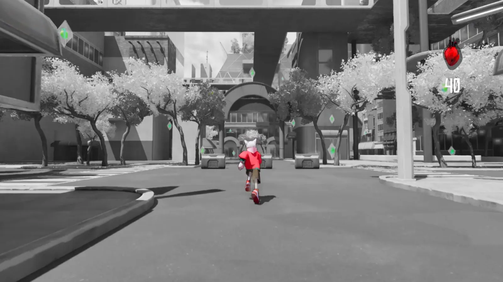
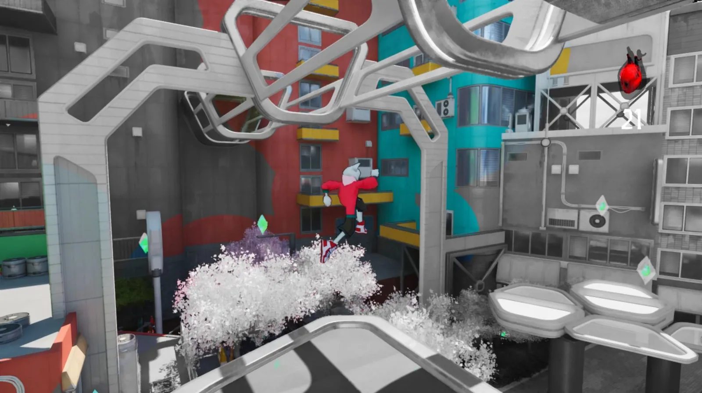

Personal projects · Madrid in Game Hack Jam 6 · 2024
Beat Found
Get back on track! A 3D rhythm platformer where you recover all the Heart Beats to make Madrid beat again.





About the game
In a dystopian future, Madrid has lost the most important thing, its people. With them, its music, its color and its essence are forgotten.
Recover all the Heart Beats to make Madrid beat again.
My contributions
[PP-BEATFOUND-CONTRIB] Pending text: my role and what I designed / programmed on this game.